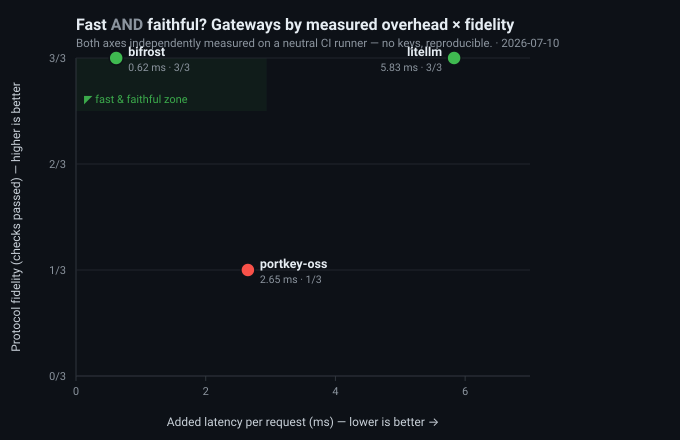

What you fear most when picking a relay API / gateway: model substitution and degradation, inflated token counts, fake streaming, vanishing operators, and peak-hour stalls. These can't be judged from a gateway's own claims — only from behavior fingerprints built up through continuous probing. The scripts, raw data, and aggregation logic are all open source, so you can reproduce them with your own key to test your own gateway.
Swapped for a cheaper model, silent quantization degradation, stripped tool calls, fake streaming (buffer then dump as if streaming). See tool calling / streaming authenticity ↓ and behavior fingerprints ↓
Inflated token multiples, hidden system prompt injection, cache billed at full price, suspiciously cheap reverse-engineered channels. See the price matrix ↓ and usage-recompute fingerprints
Peak-hour rate limiting and stalls, account bans cutting off traffic, cheap acquisition followed by price hikes or exit. See the 30-day success-rate time series ↓ — the longer it runs, the more the cracks show.
Same task, compare cost; same budget, compare output (price-value measurements) · public authoritative benchmarks (hard scores with sources) · per-scenario capability (coding / math / science / knowledge).
For the same model, different relays/gateways differ in compliance and safety (behavior check) · whether price is inflated (price matrix) · whether stability holds up (30-day time series) — black-box measured, not claimed.
Probe scripts, decision thresholds, and raw data are committed run by run, reproducible with your own key; no black-box weighted total score. See the full analysis framework in the knowledge base.
Trust rating, three tiers: Direct Verified passed cross-check verification; Claimed, Unverified gateway self-claims, no cross-check evidence yet; Unverified no claim or refused testing. See the next section for details.
A channel's source is hard to "prove" directly, so this benchmark takes the position of a combination of behavior fingerprints: whether tool calls are stripped, whether streaming is genuine (per-chunk timing), whether usage is inflated (recomputed and compared locally), whether latency characteristics match the official endpoint — multiple black-box-measurable signals form a composite picture, rather than taking the gateway's self-claims at face value. When conditions allow, a K2-style cross-check against the official API is added (a fixed request set comparing finish_reason F1 and schema validity rate). Data retention and operating entity are manually annotated from the original terms, with the annotation date attached.
| Gateway | Channel Source | Cross-check | Prompt Retention | Used for Training | Operating Entity | Invoice | Evidence |
|---|
Every item is a black-box probe reproducible from a fixed script: Model Echo — whether the response's model field matches the request (catches substitution) · Tool Calling — whether tool calls are stripped · Real Streaming — whether output is buffered then dumped as fake streaming · CJK Integrity — whether Chinese output is corrupted (a quantization-degradation tell) · Context — whether markers in long text are silently truncated. Green = all probed models passed, red = some models failed, — = no decidable data yet.
| Gateway | Model Echo | Tool Calling | Real Streaming | CJK Integrity | Context | Cache | Usage Fingerprint |
|---|
These signals are not a presumption of guilt: a single failure may be network jitter or a limit of the model itself; what matters is consistent, repeated behavior. The Usage Fingerprint column shows "characters per token"; for the same model across gateways, an abnormally low value = suspected token inflation, to be checked against the official baseline (comparison lights up once the baseline is aligned).
A mock upstream returns spec-correct responses (a tool call, a real multi-chunk SSE stream with usage); we check what actually arrives through each gateway — any drop is the gateway's translation layer, not the model. No keys, reproducible in CI. Passthrough = OpenAI-format in and out; cross-format = an Anthropic client (Claude Code / the Anthropic SDK) routed to an OpenAI model — the hardest path, and the single most-filed "tool calls break" complaint.

| Gateway | tool_calls | streaming | usage | Score |
|---|
| Gateway | tool_use | streaming | usage | Score |
|---|
not offered = the gateway doesn't expose an Anthropic-client → OpenAI-upstream path (a capability fact, e.g. Portkey OSS's /v1/messages is Anthropic-provider-only); inconclusive = a setup/compat error yielded no clean measurement — neither is ever shown as a 0/3.
Price Index = the geometric mean of the gateway's multiples across all comparable models: <1.00 cheaper than official, >1.00 more expensive than official. Suspiciously cheap (<0.5×) usually means a reverse-engineered channel — read it alongside the trust rating.
| Gateway | Protocol | Models | Probed Models | Price Transparency | Direct Latency |
|---|
Behind every column on the board is a logic for making the call. These articles break down "is it the real model, is it overcharging, is it stable or about to disappear" into an actionable analysis framework, and explain how the platform measures and how you should read it. See all articles →
Loading articles…
Not seeing the gateway you use on the board? Or want to verify for yourself whether it's giving you the real model? Add it to data/gateways.json and run the same probe scripts locally with your key — identical to the board, and reproducible.
# Node ≥ 20, zero dependencies. After cloning: git clone https://github.com/cuihuan/llm-gateway-bench && cd llm-gateway-bench # Fastest: --url probes any OpenAI-compatible endpoint directly, no file edits, results to stdout: PROBE_KEY=sk-... node probe/probe.mjs --url https://your-gateway.com --model gpt-4o-mini --samples 3 # To include in the board + local dashboard: after adding to data/gateways.json node probe/probe.mjs --gateway <id> --out data/results && npm run aggregate && npm run serve
Whether tool calls are stripped · streaming authenticity (fake streaming = TTFT ≈ total latency then dumped at once) · usage recompute (abnormally low characters per token = suspected inflation) · measured TTFT/throughput percentiles.
The probe prompts, sample counts, and decision thresholds are all written in the scripts, with a random string to defeat caching; raw results are committed run by run into data/results/, so anyone can reproduce the same conclusion with their own key. No black-box weighted total score.
Submit a PR editing data/gateways.json (fill in baseUrl / authEnv / probeModels); once the maintainer adds the key in Secrets, it automatically enters the 6-hourly probing and data accumulates over time.